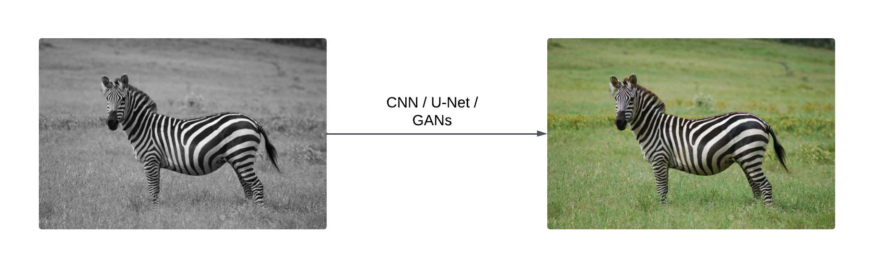
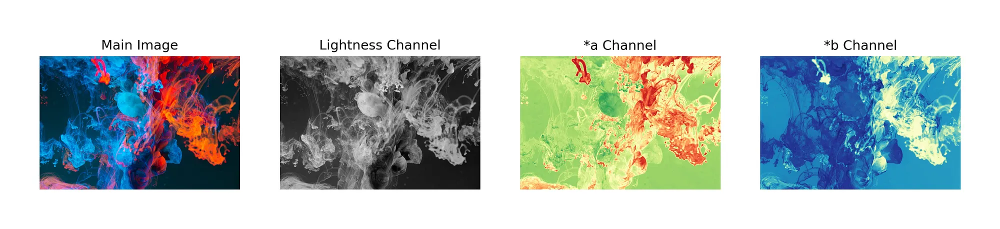

Gray to Glory: Performance Analysis of Image Coloration Models
Gauransh Sawhney, Daksh Dave, Tushar DeshpandeFall 2024 ECE 4554/5554 Computer Vision: Course Project
Virginia Tech
Abstract
Automatic image coloration is a challenging problem in computer vision, motivated by its potential applications in image restoration, enhancement, and creative tasks. This project explores the performance of various deep learning architectures in transforming grayscale images into realistic color versions, aiming to understand the theoretical underpinnings and practical performance of these models. The approach involves experimenting with a progression of architectures: a simple CNN-based encoder-decoder, a U-Net with a pre-trained ResNet backbone, and a conditional GAN with the aforementioned U-Net as the generator, incorporating adversarial loss. Preliminary results indicate that as model complexity increases, the generated images exhibit improved color fidelity and realism, highlighting the potential of GANs in achieving context-aware and high-quality colorization. We observe an improvement in Mean Absolute Error (MAE) from 0.0848 for the CNN-based Encoder-Decoder to 0.0807 for cGAN. Similarly we also observe an improvement Learned Perceptual Image Patch Similarity (LPIPS) score (using VGG) from 0.148 for the CNN-based Encoder-Decoder to 0.132 for cGAN.
Introduction
Image colorization—the process of converting grayscale images into plausible color versions—has garnered significant interest due to its wide-ranging applications, including the restoration of historical photographs, enhancement of medical imaging, and the generation of visually enriched content for creative industries. This task is inherently challenging, as it requires a model to infer appropriate colors based on contextual and semantic information present in the grayscale input. Traditional methods for image colorization often relied on manual intervention or heuristic algorithms, which were labor-intensive and lacked generalizability across diverse image datasets. The advent of deep learning has revolutionized this field, enabling the development of models that can learn complex mappings from grayscale to color images directly from data. Notable approaches include convolutional neural networks (CNNs) and generative adversarial networks (GANs), which have demonstrated remarkable success in producing realistic colorizations. For instance, Zhang et al. proposed a deep learning approach that combines a CNN with high-level features extracted from a pre-trained model, achieving impressive results in automatic colorization tasks [1]. Similarly, Deshpande et al. introduced a variational approach to produce diverse and contextually appropriate colorizations, highlighting the potential of probabilistic models in this domain [3]. Despite these advancements, challenges remain, particularly in generating contextually accurate and diverse colorizations. Recent research has focused on leveraging generative models to address these issues. Wu et al. introduced a method that utilizes a pretrained GAN to provide rich and diverse color priors, enabling the production of vivid and varied colorizations [2]. In this project, we aim to conduct a comparative study of various deep learning architectures for image colorization, including simple CNN-based encoder-decoders, U-Net architectures with pre-trained backbones, and GAN-based frameworks. By systematically evaluating these models across multiple datasets, we seek to identify the most effective architecture for producing realistic and high-quality colorizations, thereby advancing the current state of the art in automatic image colorization.Approach
To solve the problem of automatic image coloration, we employed a progressive approach involving multiple architectures. This approach was designed to analyze and compare the effectiveness of various models in transforming grayscale images into realistic colorized versions. The process included data preprocessing and three main modeling phases: baseline CNN encoder-decoder, U-Net architecture with a ResNet-18 backbone, and a Conditional GAN (cGAN) with a PatchGAN discriminator [4].Data Preprocessing
- The images from the COCO dataset were converted into the Lab color space, where the L* channel (lightness) represents grayscale information, and the A* and B* channels encode color information.
- The L* channel was used as the input to the model, while the A* and B* channels served as the ground truth outputs for supervised learning.
- To ensure consistency, all images were resized to 256x256 pixels and normalized to a range between -1 and 1 for both input L channel and output AB channel.
- Random horizontal flipping was applied to the images before breakdown into L and AB channel to enhance model generalization and robustness.

Model Architectures
-
CNN Encoder-Decoder: We started with a simple encoder-decoder CNN architecture as our baseline. The encoder extracted latent grayscale features, while the decoder reconstructed the A* and B* color channels. This model served as a foundational benchmark for further comparisons.
- Encoder: This module captures the spatial features by applying multiple convolution layers followed by downsampling like max pooling. This helps in reducing the dimensions and extracts important features.
- Lantent Representation: The encoder outputs a feature representation which is compact in nature and gives the most vital spatial and semantic information
- Decoder: The decoder takes the input from the encoder and performs upsampling with operations like transposed convolutions or interpolation. It thereby increases the spatial dimensions, performs convolutions to refine the features to output the finaloutput.
- Output layer: We have a final convolution layer that outputs the desired output which is in the form of a RGB image.
-
U-Net with ResNet-18 Backbone: The U-Net architecture, with a ResNet-18 backbone in the encoder, was the second phase of our approach. Pre-trained weights from ImageNet were loaded into the encoder to leverage transfer learning, enhancing the model's ability to extract meaningful features. The pre-trained U-Net was fine-tuned on our dataset for 20 epochs to adapt to the specific task of image colorization.
- Encoder: Similar to the Encoder-Decoder module, the Encoder in UNet captures importatant spatial features, reducing the image size while extracting important features. Here we replace the traditional encoder with a ResNet-18 architecture. ResNet-18 consists of convolutional layers and skip connections (in the form of residual blocks) that help to learn deeper representations without having the vanishing gradient problem.
- Connection: The deepest part of the UNet from the encoder gets connected to the decoder, which has captured the most important spatial features
- Decoer: This model performs upsamling and recaptures the image resolution by concantenating them with corresponding feature maps from encoder. Skip Connections: The skips connections link the encoder layer to the corresponding decoder layers, which preserves fine-grained spatial features which get lost during the downsampling operation.
Training: We used predefined weights from ImageNet using the Fast AI library. THe UNet was then trained using the Adam optimizer for 20 epochs with L1 loss as the criterion, since it - preserves spatial structure, it is robust to any outliers and has a better gradient flow.

- PatchGAN Discriminator: We used a PatchGAN discriminator, which evaluates the realism of small image patches rather than the entire image. This approach ensures local coherence, as the discriminator classifies each patch of the generated image as real or fake. PatchGAN was chosen because it is effective in preserving fine details and textures, which are critical for realistic image colorization.
- Generator: The DCGAN uses the UNet module as it's generator output. It creates images using the UNet module by effectively capturing spatial dimensions with skip layers. This enables accurate mappings from grayscale to colorized outputs.
- Discriminator: This is a custom CNN module which differentiates between the real images or generated ones. This assesses the authenticity, which makes use of convolutions to differentiate between real or generated real and generated colorizations.
- Training: We trained the DCGAN using BCE Loss for 10 epochs. We used the adam optimizer again for training the discriminator with decay rate taken as 0.9.

Implementation Details
- Dataset: The COCO dataset was used, with a subset of 10,000 images. The dataset was split into 8,000 images for training and 2,000 for testing.
- Training Setup: The CNN encoder-decoder was trained for 100 epochs as a baseline. The U-Net architecture was pre-trained for 20 epochs with ImageNet weights before being fine-tuned. The Conditional GAN was trained by integrating the U-Net generator with the PatchGAN discriminator.
- Pre-trained Models: The ImageNet pre-trained weights for the ResNet-18 backbone were utilized to expedite convergence and improve feature extraction. The pre-trained architectures were obtained from publicly available PyTorch repositories.
Challenges and Solutions
- Challenge: Balancing model complexity with computational constraints.
- Solution: Transfer learning using ImageNet pre-trained weights allowed us to start training from a strong initialization, reducing training time.
- Challenge: Fine-tuning PatchGAN to work effectively for image colorization.
- Solution: Extensive experimentation with the discriminator's patch size to ensure optimal detection of local inconsistencies.
Design Choices
- Why Conditional GAN: cGANs condition the output on the input, ensuring that the generated image aligns with the grayscale input's semantic content. This made them particularly suitable for the image coloration task, as they could handle context-sensitive colorization.
- Why PatchGAN Discriminator: PatchGAN discriminates at the level of image patches, which is effective for ensuring local coherence in generated images. This is particularly useful for image colorization, where local color consistency is critical.
Experiments and Results
Experimental Setup
- Datasets: A subset of the COCO dataset with 10,000 images. The training set consisted of 8,000 images, and the test set included 2,000 images.
- Metrics: L1 Error was used to evaluate pixel-wise accuracy during training. Mean Absolute Error (MAE) and Learned Perceptual Image Patch Similarity (LPIPS) score (using latent features from pretrained VGG) [7] are used to quantitatively compare the model performances.
Results
- CNN Encoder-Decoder: Achieved baseline results with limited ability to capture complex features, showing noticeable artifacts in the colorized outputs. We got a validation loss of 0.0836 after training it for 10 epochs. We trained the module using the L1 loss criterion with learning rate set as 0.001.
- U-Net with ResNet-18 Backbone: Improved performance compared to the baseline, with enhanced feature extraction and better contextual colorization. The UNet was trained for 20 epochs and acheieved a L1 loss of 0.081 . We set the learning rate to 0.0001
- Conditional GAN: Produced the most realistic and visually consistent outputs. The incorporation of adversarial loss with the PatchGAN discriminator significantly reduced artifacts and improved local color coherence. We achieved a discriminator loss of 0.1067 and discriminator loss of 4.5 after training for 10 epochs. We also tried regularization using Wasserstein Loss that was used by the Discriminator to evaluate whether the generated image is real or fake. We got a greater accuracy with both the Discriminator and Generator loss converging with losses of around 0.003.
The MAE and LPIPS value on the test dataset for each model is listed in Table 1.
Table 1: Results
| Model | MAE | LPIPS |
|---|---|---|
| CNN Encoder-Decoder | 0.0848 | 0.148 |
| U-Net (ResNet-18 backbone) | 0.0846 | 0.141 |
| cGAN | 0.0807 | 0.132 |
Parameter Analysis
Adjusting the patch size in the PatchGAN discriminator affected the realism of local features. Larger patches reduced sensitivity to finer details, while smaller patches improved local consistency at the expense of global structure.- Epoch: We have tried to use the number of epochs for getting better accuracy but also making sure we do not overfit any model. Hence for training the UNet we used 20 epochs, after which we were seeing results getting converged with no frther reductions in losses. Similarly for DCGAN, we kept the epoch numbers to 10 so that the generator does not overflow and discriminator does not overfit.
- Learning Rate: Since learning rate is a vital parameter in training neural networks since they control by how much the weights should be adjusted, we kept it as 0.01 so as to avoid any irregularities and unstable updates that would have destabilized the training.
- Beta1: Beta1 used in training the GAN is also a important parameter for the ADAM optimizer to take into account past weight updates for the current weights. We kept it as 0.5 to prevent any rapid updates, which allowed for stable training especially in earlier stages.
- Criterion: We used L1 loss as the criterion for training because it allows for pixelwise accuracy which hlps in generating realistic images. We used the BCE loss for training the GAN which is a common method, the discriminator learns to differentiate between real and fake images and generator is given the taks to fool the discriminator into classfying the generated images as real ones.
- Batch Size: The batch size allows the neural network to update the weights in batches (controls the frequency as to when weights are updated). Since larger batch size required more memory and smaller ones lead to noiser gradients, we set the batch size as 32.
- Noise Dimension: The noise dimension provides the size of random noise fed to the generator, larger ones lead to overfitting but help generate more creative and realistic images. We kept it as 100, which is usually used in GANs to provide more diversity.
Trends
The progression from a simple encoder-decoder to the U-Net and GAN demonstrated a clear improvement in colorization quality. This trend aligns with the increasing complexity and capability of the models to capture semantic information. The results validated the effectiveness of cGANs with PatchGAN discriminators for image colorization, offering a significant improvement over baseline models. These findings highlight the importance of balancing local and global features in generating realistic colorizations.Conclusion
This report has described the design, implementation, and evaluation of various deep learning architectures for automatic image coloration. Starting with a baseline CNN encoder-decoder, progressing to a U-Net with a ResNet-18 backbone, and culminating with a Conditional GAN incorporating a PatchGAN discriminator, the study highlighted the strengths and limitations of each approach. The results demonstrated that increasing model complexity, along with the integration of adversarial loss, significantly improved the realism and coherence of the colorized outputs. The U-Net architecture with pre-trained ResNet-18 weights provided a strong foundation for feature extraction and contextual understanding, while the Conditional GAN produced the most visually realistic results by leveraging adversarial training and patch-level discrimination. These findings validated the effectiveness of combining local and global feature learning to achieve high-quality colorizations.Future Improvements
To further enhance the approach, several improvements could be considered:- Data Augmentation: Expanding the dataset with more diverse images and applying advanced augmentation techniques could help the model generalize better to unseen images.
- Loss Functions: Experimenting with perceptual loss or combining MSE with adversarial loss might improve the model’s ability to generate outputs that are both quantitatively and qualitatively superior.
- Higher-Resolution Models: Incorporating super-resolution techniques or adapting the model for higher-resolution inputs could enhance the fine details in the colorized images.
References
- R. Zhang, P. Isola, and A. A. Efros, "Colorful Image Colorization," Proceedings of the European Conference on Computer Vision (ECCV), pp. 649–666, 2016. [Online]. Available: https://arxiv.org/abs/1603.08511
- Y. Wu, P. Zhang, and C. Zhang, "Generative Colorization for Diverse Images," arXiv preprint arXiv:2108.08826, 2021. [Online]. Available: https://arxiv.org/abs/2108.08826
- A. Deshpande, J. Lu, M. Yeh, M. Jin, and D. Forsyth, "Learning Diverse Image Colorization," Proceedings of the IEEE Conference on Computer Vision and Pattern Recognition (CVPR), pp. 6837–6845, 2017. [Online]. Available: https://arxiv.org/abs/1612.01958
- Isola, Phillip, et al. "Image-to-image translation with conditional adversarial networks." Proceedings of the IEEE conference on computer vision and pattern recognition. 2017.
- C. Li and M. Wand. Precomputed real-time texture synthesis with markovian generative adversarial networks. ECCV, 2016
- O. Ronneberger, P. Fischer, and T. Brox. U-net: Convolutional networks for biomedical image segmentation. In MICCAI, 2015
- Zhang, R., Isola, P., Efros, A. A., Shechtman, E., and Wang, O. The unreasonable effectiveness of deep features as a perceptual metric. In Proceedings of the IEEE conference on computer vision and pattern recognition, 2018.